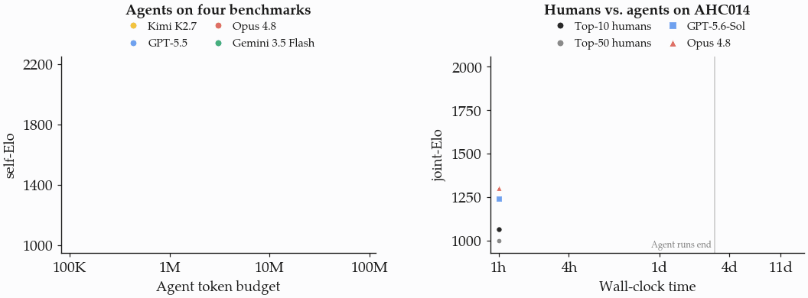
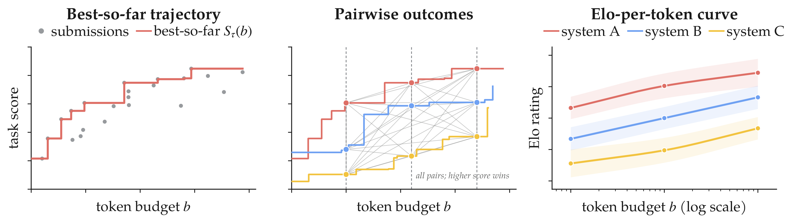
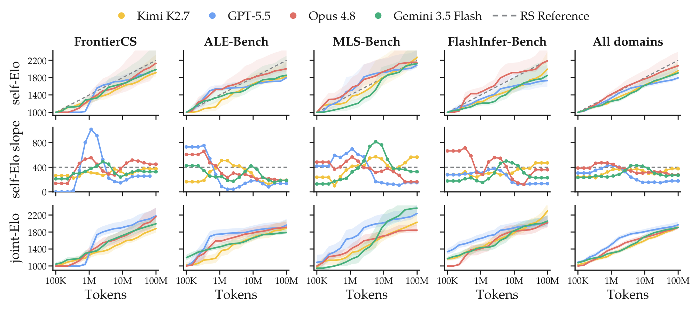
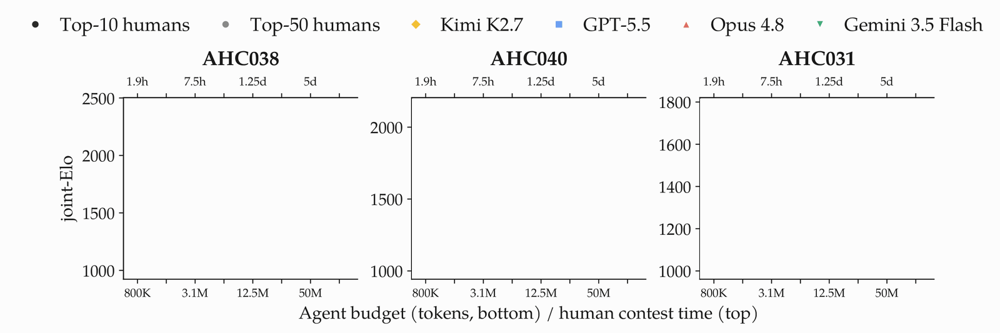
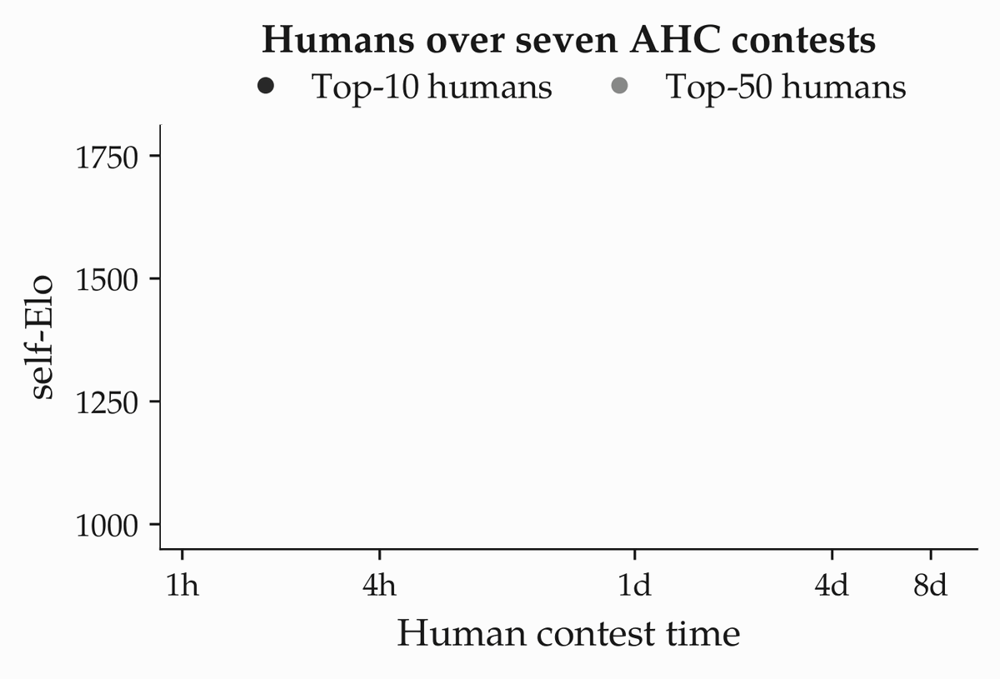
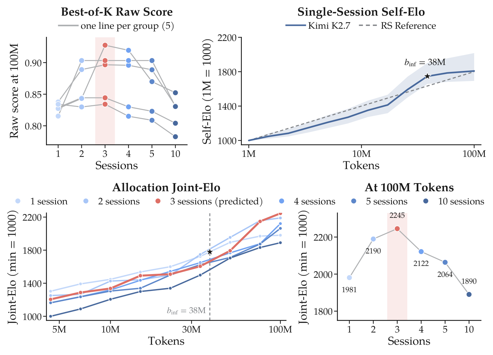
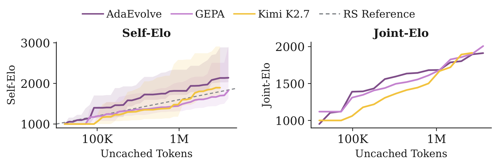
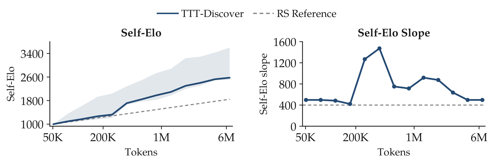
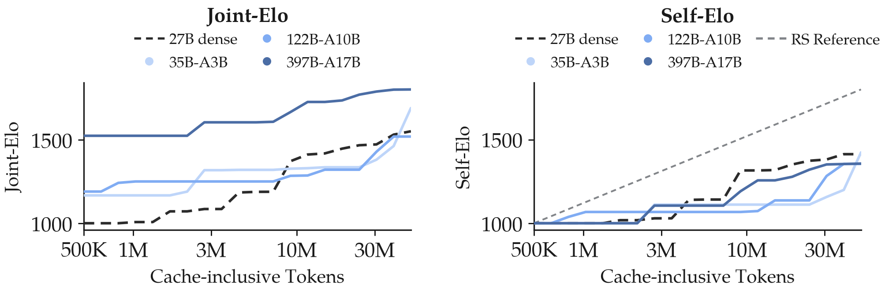

We previously studied how agents and humans scale against repeated sampling on a long-horizon task in Humans Still Beat AI in the Long Horizon. This project extends that initial analysis into a suite of tools for systematically understanding agents' test-time strategies across tasks, systems, and compute scales.

Agent and human scaling against repeated sampling. Left: self-Elo curves for four agent systems, each aggregated across FrontierCS, ALE-Bench, FlashInfer-Bench and MLS-Bench; shading shows 95% confidence intervals and the dashed line is the 400-Elo-per-decade independent-sampling reference. Right: human–agent joint-Elo on AHC014 over wall-clock time; agents flatten within their 24-hour runs, while the top-10 and top-50 human cohorts overtake them within days and keep improving.
TL;DR
A common scale.Elo-per-token rates an agent's best solution so far at every token budget with a Bradley–Terry model, so agents, sampling baselines and human contestants can be compared across tasks whose raw scores live on different scales.
Agents reduce to independent sampling. Solving a task k times independently and keeping the best attempt gains exactly 400 Elo per decade of compute. Kimi K2.7, GPT-5.5 (Codex), Claude Opus 4.8 and Gemini 3.5 Flash start faster than this line on four open-ended benchmarks, but after the first few context-window compactions their marginal gains fall to, and often below, it — over sessions of up to 100M tokens.
Humans scale superlinearly. Under the same judge, the strongest AtCoder Heuristic Contest competitors keep improving superlinearly in log contest time and overtake agents within days: evidence of continual learning within a single problem.
A rule for spending compute. The scaling inflection point, where an agent's Elo slope drops to the sampling reference, tells you how to split a budget. On FrontierCS Polyomino Packing, three 33M-token sessions beat one 100M-token session by +264 Elo and ten 10M-token sessions by +355.
What is Elo-per-token?
Open-ended tasks such as GPU-kernel optimization, heuristic programming contests and ML-systems tuning score every submission, so progress inside a long session is observable. Raw scores, however, are not a usable measure: they use different units across tasks, and within a task equal increments need not mean equal progress. We therefore rate submissions instead of scoring them.

From submission streams to Elo curves. Each session emits a stream of (tokens so far, score). At every checkpoint on a 1.5× token grid a session's player is its best score so far. Two players on the same task play a game (higher score wins, ties split); outcomes are pooled across tasks and a Bradley–Terry model turns them into one Elo rating per (system, budget) player, anchored at 1000.
Because Elo depends only on within-task orderings, it is comparable across tasks and insensitive to the nonlinearity of raw scores. Self-Elo fits one system alone from cross-session games between its own checkpoints, so the curve shape is the system's own scaling behaviour. Joint-Elo puts several systems — or agents and human contestants — in one tournament, so their levels become comparable too.
Independent sampling is a straight line: 400 Elo per decade
If a system's sessions are exchangeable, spending k times the compute by running k independent sessions and keeping the best one is best-of-k. Under the Bradley–Terry model the strength of best-of-k grows linearly in k, so its Elo is
Elo(k) = Elo(1) + 400 · log10 k
— a straight line of 400 Elo per decade of compute, independent of the task. This memoryless strategy is the reference against which we read every curve: a system that scales better than sampling from its own state must be doing something with its context that repeated attempts cannot.
Scaling inflection point. The last budget at which a system's self-Elo slope still exceeds 400 Elo per decade. Beyond it, continuing the session is asymptotically less compute-efficient than restarting independent sessions from the state already reached.
Agents fail to break log-linear scaling
We run four general-purpose coding agents — Kimi Code (K2.7), Codex (GPT-5.5), Claude Code (Opus 4.8) and Gemini CLI (Gemini 3.5 Flash) — with a 100M-token budget per session on FrontierCS, ALE-Bench, FlashInfer-Bench and MLS-Bench, five sessions per task, submitting intermediate solutions throughout. Every submission is scored by the benchmark's own judge.

Agent scaling across benchmarks. Top: self-Elo curves on each benchmark and pooled across all domains, with 95% session-bootstrap intervals and the sampling reference (dashed). Middle: local self-Elo slope fitted over five neighbouring checkpoints; the dashed line is the 400-Elo-per-decade sampling slope. Bottom: joint-Elo curves compare the systems on a shared scale within each benchmark and across all domains.
Takeaway. Every system keeps improving with more compute, but the local slopes peak within the first megatokens and then decay toward — and usually below — the sampling line. Once the harness has compacted its context a few times, an agent's adaptive strategy no longer buys more than independent restarts would.
Humans keep learning: superlinear scaling on the same tasks
AtCoder Heuristic Contests give us long-horizon human trajectories on exactly the kind of open-ended tasks the agents run on. We rejudge every accepted submission of the top-50 contestants through the same checker the agents use, align the k-th contest-hour checkpoint with the k-th agent token checkpoint (both doubling grids), and fit one Bradley–Terry tournament per contest.

Human–agent joint-Elo on three AHC contests. Each panel compares the rejudged top-10 and top-50 human cohorts with all four agent systems; the bottom axis is the agent token budget, the top axis the human contest time at the corresponding doubling checkpoint. Terminal ratings are labelled.

Human self-Elo pooled over seven long AHC contests. Both cohorts are convex in log contest time: later doublings yield larger Elo gains. Shading shows 95% bootstrap intervals.
Takeaway. Agents make their strongest gains early and then flatten; the strongest humans keep accelerating and overtake them within days. Superlinear scaling cannot come from accumulating independent attempts — contestants accumulate knowledge of the problem as they work on it. Unless continual learning is solved, agents will not outperform humans on tasks that span many days.
Allocating compute at the scaling inflection point
Given a total budget B, should a system spend it on one long session or split it across K shorter independent sessions and keep the best result? We study equal allocations with b = B/K tokens per session. For a system with self-Elo curve r(b), the scaling inflection point is the last budget at which the curve grows faster than independent sampling:
Freeze the agent state and historical best at binf. Suppose equal-cost independent continuations produce i.i.d. continuous candidate scores with nonzero probability of improving the historical best. Suppose also that the sampling branches and continued session share one joint-Elo scale whose restriction to the latter is r(b). If the original harness has asymptotic post-inflection slope strictly below sref, frozen-state repeated sampling approaches slope sref and eventually yields a larger Elo gain than continuing the original session.
The first theorem motivates stopping each session at binf. For a total budget B, we evaluate the rule K = max{1, round(B / binf)} and run K independent sessions to that point.

Allocating a fixed budget on FrontierCS Polyomino Packing with Kimi K2.7. Top left: best-of-K raw score at 100M tokens in each of five nested session groups. Top right: single-session self-Elo against the sampling reference; the inflection point at 38M tokens predicts K = 3. Bottom left: joint-Elo of six allocations as the total budget grows, with the predicted three-session curve in red. Bottom right: the 100M-token cross-section. Ratings average over 20,000 random session-to-group assignments.
Theorem. Inflection-point allocation
Suppose independent sessions yield i.i.d. continuous best-so-far scores at binf. For B = K binf, running K such sessions and returning their best solution gains 400 · log10 K Elo over one session. The allocation curve extends r(binf) with slope sref while preserving the harness advantage accumulated before the inflection point.
In the experiment, one session leads at small budgets, while interior allocations overtake it beyond the inflection point. At 100M tokens, the predicted three-session split gains +264 joint-Elo over one long session and +355 over ten short ones, and is the best of the six candidates. The MLS-Bench replication points the same way.
Can specialised test-time strategies change the shape?
General-purpose agents lose their edge over independent sampling as compute grows. We ask whether strategies built for open-ended optimisation do better: outer-loop methods that evolve programs or prompts from evaluator feedback, test-time training that updates model weights during evaluation, and simply larger models.

Test-time evolving (AdaEvolve, GEPA) on Polyomino Packing, measured in uncached tokens. Left: self-Elo curves for the two evolutionary methods with Kimi Code as the agent reference; neither sustains superlinear scaling. Right: a joint-Elo fit; the evolving methods gain an early advantage that diminishes with compute.

Test-time training shows a brief period of faster-than-sampling scaling followed by diminishing returns; its slope declines back toward the reference.

Model size (Qwen3.5 family, terminus-2 harness, 50M tokens, five trials per model). Left: one tournament over all (model, checkpoint) players, so levels are comparable. Right: one fit per model anchored at 1000, so only shapes are comparable.
Takeaway. Evolutionary outer loops, online weight updates and bigger models all shift the curves, but none of them escapes the diminishing-return shape: after an early burst, every strategy we tried scales no better than repeated sampling.
Acknowledgments
This research has been supported by NSF IFML and a computing gift from Moonshot AI and Bespoke Labs.
BibTeX
@article{liu2026agentsslowdown,
title = {When Agents Slow Down: Understanding {LLM} Agents' Test-Time Strategies via {Elo}-per-token Analysis},
author = {Liu, Kaiyuan and Mang, Qiuyang and Peng, Bo and Chai, Wenhao and Li, Hanchen and Pimpalgaonkar, Shreyas and Zettlemoyer, Luke and Dimakis, Alex and Cheung, Alvin},
journal = {arXiv preprint},
year = {2026},
note = {arXiv identifier to appear}
}